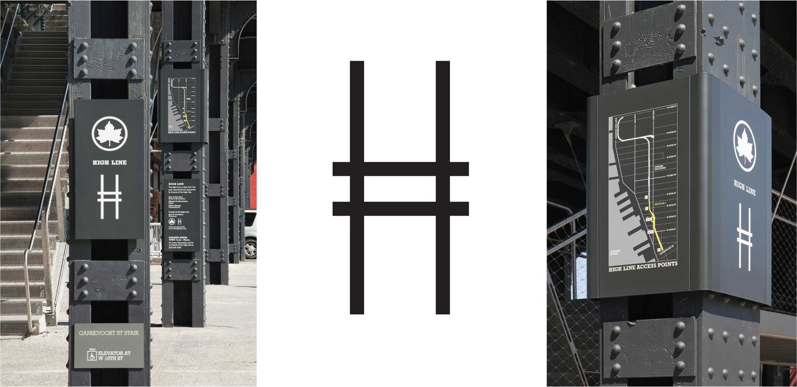
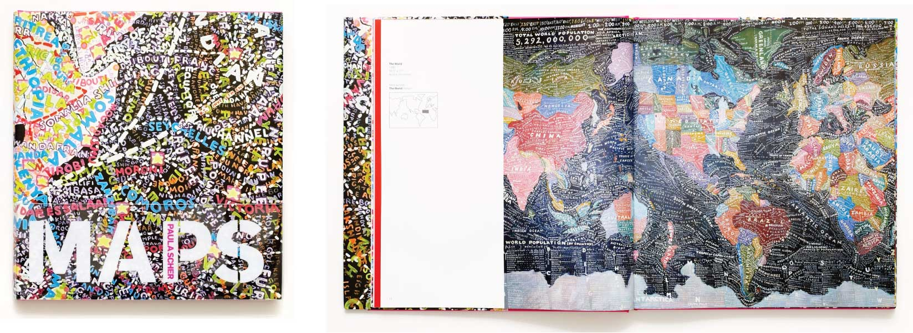
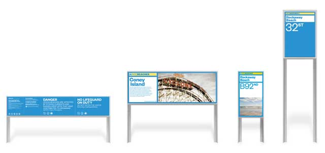
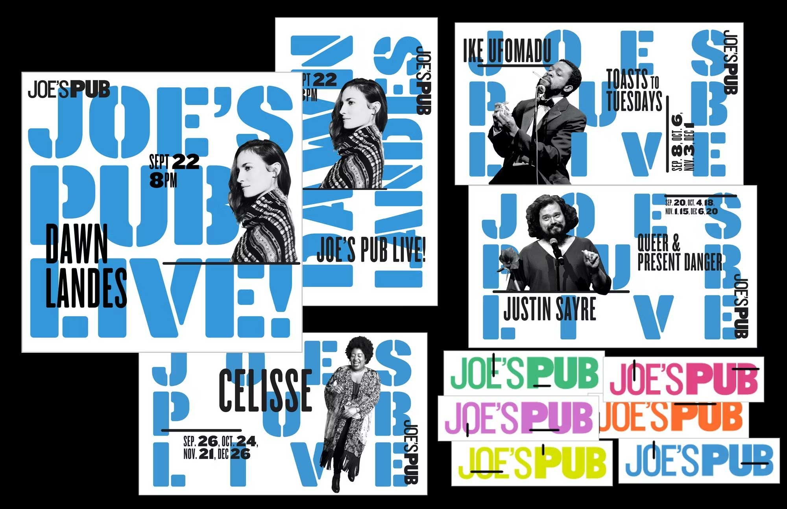

Boston Album Cover Art (1976)
Paula Scher designed and Roger Huyssen illustrated the Boston Cover Art album cover in 1976 for Epic Records. You may be familiar with Boston's hit song "More Than a Feeling." This iconic cover art features the earth blowing up and guitar-shaped spaceships leaving earth and making way to the heavens. The cover resonated greatly with Boston's culture and gave fans a better sense of the music behind the artwork. Scher is "mystified" by its success as she told the Atlantic, "It was, and still is, in my opinion, a mediocre piece of work."
The High Line Logo (2009)

The High Line is an elevated rail structure on Manhattan’s West Side that was originally build for freight trains in the 1930s. The structure was set for demolition, however, it was saved by a community non-profit organization, Friends of the High Line. They partnered with Paula Scher through Pentagram to create a new identity for the pedestrian park and promenade they planned to turn the rail structure into. Scher wanted to reflect the historical purpose of the structure by having the logo look more like railroad tracks than an "H." The revitalized park and new identity was revealed and open to the public in June 2009.
MAPS (2011)

Before Paula Scher pivoted to working with digital technology, she would physically touch, tear, and paint things to make her graphic design works. As Scher was missing the tangible aspect of graphic design, she decided to get back into painting in her spare time. She began painting large maps that were as tall as 12 feet and designed with detailed layers of text. MAPS, by Paula Scher, was published in 2011 and features 39 of her paintings, drawings, and environment installations and an essay about her father's influence on her work. Sher's father was a map maker and created a measuring device so maps could be more accurate. He didn't have a positive opinion of artists and thought serious people become engineers. Creating the map paintings, Scher felt closer to her father even though he disagreed with the accuracy of her maps, however, Scher never meant them to be 100% locationally accurate.
Please note, additional maps paintings are featured as header images on the landing pages throughout this website.
NYC Beaches (2013)

Hurricane Sandy hit NYC in October of 2012 and their beaches along with boardwalks, which span 14 miles long, were destroyed. The NYC Mayor's Office, Department of Parks and Recreation, and the NYC Department of Design and Construction swiftly took action and were able to have the beaches open on the following Memorial Day. During the restoration project, NYC partnered with Paula Scher through Pentagram to give NYC residents a warm welcome back to their beaches through an emotional design system, signage, and environmental graphics. Since the environment was unique to each beach, Scher wanted to give each beack their own identity, which launched to the public in 2013.
Public Theater Identity (2020-2021)

Shortly after Paula Scher accepted the partnership with Pentagram in 1991, she was hired by the Public Theater for a rebranding project. Scher created some of her most recognized work during this time and has been working with the Public Theater ever since. Above are examples of a more recent brand identity for their 2020-2021 season. The works feature stenciled, vibrant typography and solid black type while making use of white space. This identity was used across posters, brochures, banners, and digital design.
Please note, the homepage design of this website was influenced by the Public Theater Identity 2020-2021.